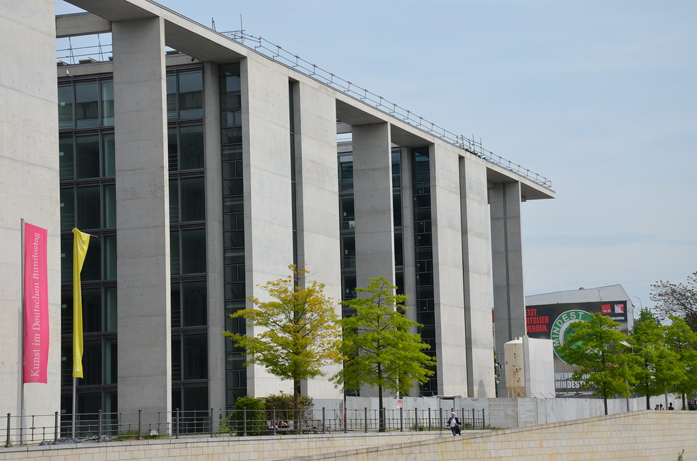
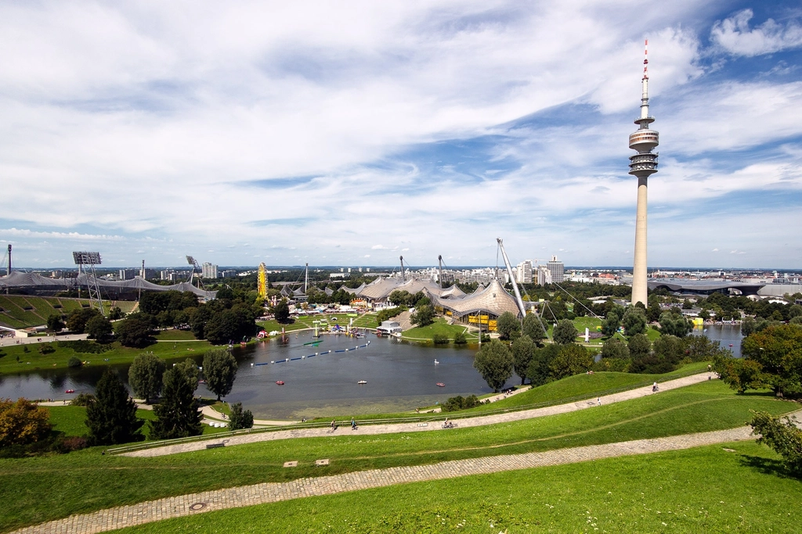
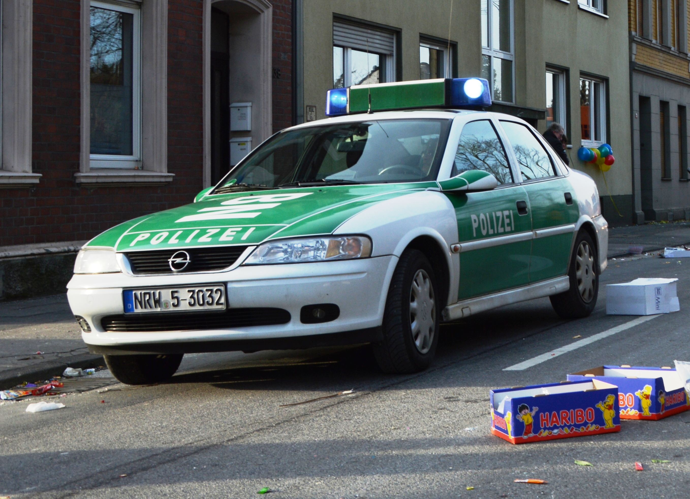
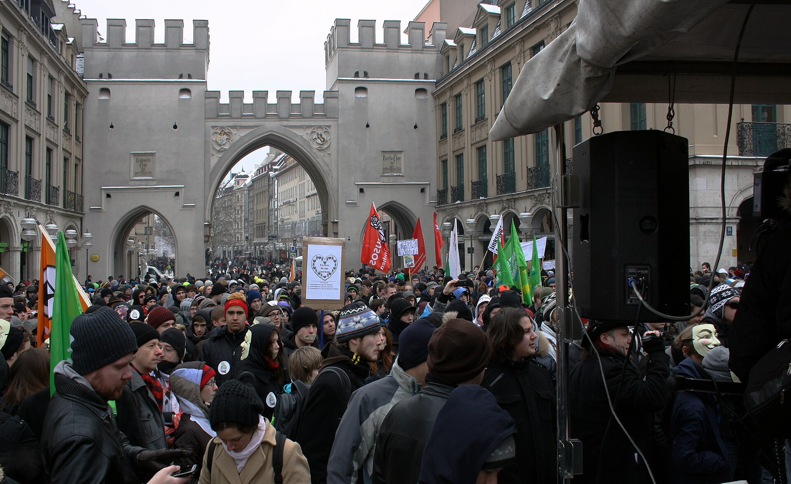

01 · esterioggi
Primo colloquio Germania–Russia dal 2022, ma nessuna svolta
IMMAGINE CC0Bundestag · Flickr Commons / CC0 record
Example Story sequence for the 27 September 2026 briefing. Five cards, one per news item. The photographs are CC0 and are used as thematic illustrations, not as photographs of the reported events.




